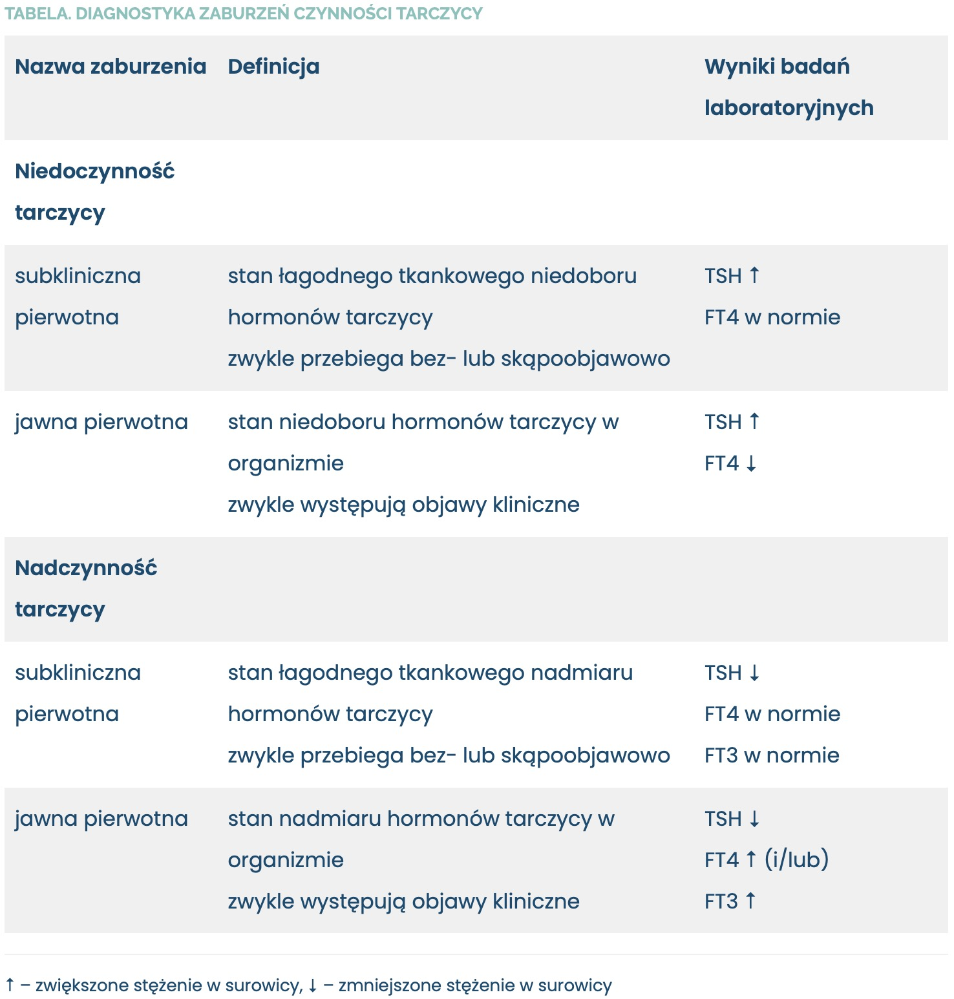
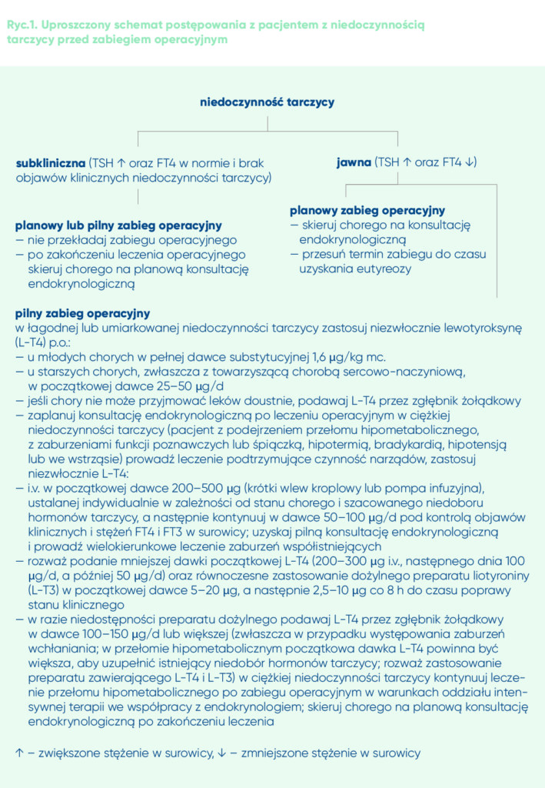
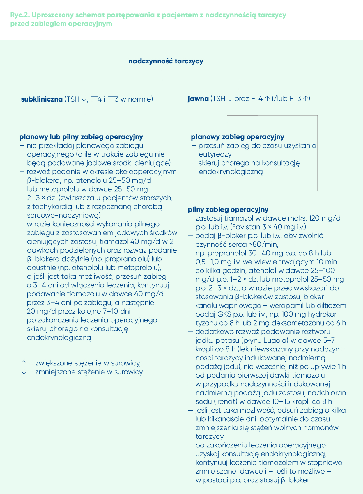

Rozdział 2 Pacjent z zaburzeniami czynności tarczycy
lek. Dorota Studzińska1, dr n. med. Ewa Płaczkiewicz-Jankowska2, prof. dr hab. n. med. Marek Ruchała3, prof. dr hab. n. med. Wojciech Szczeklik4
- Szpital Zakonu Bonifratrów św. Jana Grandego w Krakowie
- Polski Instytut Evidence Based Medicine w Krakowie
- Katedra i Klinika Endokrynologii, Przemiany Materii i Chorób Wewnętrznych, Uniwersytet Medyczny w Poznaniu
- Uniwersytet Jagielloński Collegium Medicum w Krakowie
2.1 Wprowadzenie
Interdyscyplinarna współpraca w opiece nad pacjentem, zwłaszcza w sytuacjach, w których konieczne jest dynamiczne działanie, warunkuje wybór optymalnego postępowania. Niewątpliwie z taką sytuacją mamy do czynienia, przygotowując pacjenta do zabiegu operacyjnego i w opiece okołooperacyjnej. Pomimo częstego występowania chorób tarczycy w populacji ogólnej nie opracowano dotąd wytycznych postępowania i jednoznacznych zasad kontroli czynności hormonalnej tarczycy przed planowanym i przed pilnym zabiegiem operacyjnym. W codziennej praktyce klinicznej spotykamy się też z przypadkami braku zgody na przeprowadzenie zabiegu ze względu na nieznacznie odbiegające od normy stężenie TSH w surowicy, przy prawidłowych stężeniach wolnych hormonów tarczycy (FT4 i FT3), w tym także u pacjentów z jatrogennymi subklinicznymi zaburzeniami funkcji tarczycy, do czego nie powinno dochodzić. Częste wzajemne niezrozumienie pomiędzy specjalistami biorącymi udział w opiece nad pacjentem lub oczekiwanie na zbędne wyniki badań specjalistycznych bądź konsultacji pociągają za sobą wybór sposobu postępowania, który nie jest optymalny dla chorego, w tym również niepotrzebne odraczanie terminu zabiegu. Dbając więc o dobro chorego, musimy przestrzegać zasad, które z jednej strony zapewnią mu jak największe bezpieczeństwo w okresie okołooperacyjnym, z drugiej zaś nie będą przyczyną niepotrzebnych opóźnień leczenia chirurgicznego. Ma to szczególne znaczenie w sytuacjach pilnych zabiegów lub przeprowadzanych ze wskazań życiowych. Nie ma wtedy czasu na zbędne rozważania, a sposób postępowania nie powinien budzić wątpliwości. Pomimo wielu prób nie sformułowano jednak do tej pory jasnych wskazówek dla osób biorących udział w opiece okołooperacyjnej co do optymalnego postępowania u pacjentów z podejrzewaną lub z rozpoznaną chorobą tarczycy. Niniejszy artykuł wypełnia tę lukę.
2.2 Pierwotne zaburzenia czynności tarczycy
2.2.1 Przed zabiegiem operacyjnym
Pomimo stosunkowo częstego występowania zaburzeń czynności tarczycy w populacji ogólnej (do 7% u kobiet i 3% u mężczyzn)1,2 nie zaleca się eutyrerutynowego oznaczania stężeń hormonów tarczycy u wszystkich pacjentów przygotowywanych do zabiegu operacyjnego, zwłaszcza tych bez wcześniej rozpoznanej choroby tarczycy, o ile nie stwierdza się żadnych objawów, które mogłyby nasuwać jej podejrzenie. W większości przypadków zaburzenia czynności tarczycy mają charakter pierwotny (są spowodowane chorobami tarczycy), i to one będą przedmiotem artykułu, gdyż zaburzenia wtórne występują bardzo rzadko. Staranne badanie pacjenta pozwala wykryć objawy, które mogą nasuwać podejrzenie choroby tarczycy. Do najważniejszych należą: zmiana masy ciała bez znanej przyczyny, tachykardia lub bradykardia, drżenie rąk, wzmożona potliwość albo wyraźna suchość skóry, wypadanie włosów, zmiana rytmu wypróżnień, obrzęki (zwłaszcza niepoddające się uciskowi), wytrzeszcz oczu, powiększenie obwodu szyi, wyczuwalne w badaniu przedmiotowym guzki tarczycy.
Zaleca się, by przed planowanym leczeniem operacyjnym oznaczyć stężenie tyreotropiny (TSH) u pacjentów:3
- z objawami klinicznymi, które mogą sugerować występowanie nadczynności lub niedoczynności tarczycy
- z dodatnim wywiadem w kierunku zaburzeń czynności tarczycy:
- w trakcie leczenia
- jeśli leczenie prowadzono w przeszłości (np. po tyreoidektomii lub izotopowym leczeniu chorób tarczycy)
- z podejrzewanymi lub stwierdzonymi zmianami strukturalnymi tarczycy (np. wole i/lub guzki)
- z rozpoznaną jakąkolwiek inną chorobą autoimmunologiczną
- narażonych na duże dawki jodu (np. leczonych amiodaronem lub poddawanych badaniom obrazowym z użyciem jodowych środków cieniujących).
U pacjentów z nieprawidłowym stężeniem TSH zaleca się oznaczenie stężenia wolnych hormonów tarczycy – tyroksyny [FT4], a w przypadku podejrzenia nadczynności tarczycy również trijodotyroniny (FT3). Po stwierdzeniu jawnej niedoczynności lub nadczynności tarczycy (p. tab.) konieczne jest skierowanie chorego na konsultację endokrynologiczną w celu poszerzenia diagnostyki (USG tarczycy, oznaczenie przeciwciał przeciwtarczycowych) oraz ustalenia dalszego postępowania, a u chorych z już rozpoznaną i leczoną chorobą tarczycy – w celu optymalizacji terapii. W przypadku zabiegów planowych diagnostykę należy przeprowadzić przed operacją, by szybko rozpocząć leczenie, a termin zabiegu odroczyć do czasu wyrównania zaburzeń czynności tarczycy. Nie rozpoznaje się zaburzeń czynności tarczycy, jeśli prawidłowemu stężeniu TSH w surowicy towarzyszy nieznacznie zwiększone lub zmniejszone stężenie FT4 – w takiej sytuacji nie ma potrzeby wykonywania kolejnych badań, a tym bardziej odraczania zabiegu operacyjnego.
Tabela. Diagnostyka zaburzeń czynności tarczycy

2.3 Niedoczynność tarczycy
2.3.1 Zabieg operacyjny
Uważa się, że subkliniczna niedoczynność tarczycy nie zwiększa ryzyka powikłań okołooperacyjnych i nie powinna być przyczyną opóźniania operacji.4 Jawna niedoczynność może z kolei zwiększać ryzyko wystąpienia w okresie okołooperacyjnym hipotensji, niewydolności oddechowej, niedrożności jelit, hiponatremii oraz dysfunkcji ośrodkowego układu nerwowego i innych powikłań. W związku z tym planowy zabieg operacyjny powinno się odroczyć do czasu uzyskania eutyreozy, co zwykle zajmuje 1–3 miesięcy.4 Im cięższa niedoczynność tarczycy, tym częstsze i bardziej nasilone powikłania okołooperacyjne (w tym również gorsze gojenie rany pooperacyjnej, zakażenie o cięższym przebiegu).4 Ważnym celem leczenia jest zminimalizowanie ryzyka wystąpienia najcięższej postaci niedoczynności tarczycy, jaką jest przełom hipometaboliczny, który może się rozwinąć u chorego z jawną niedoczynnością tarczycy wskutek urazu operacyjnego. Przełom hipometaboliczny, zwany śpiączką hipometaboliczną, charakteryzuje się występowaniem zaburzeń świadomości, hipotermii, hipowentylacji, bradykardii, niewydolności serca oraz upośledzenia czynności innych narządów, i stanowi stan bezpośredniego zagrożenia życia. Jest rozpoznaniem klinicznym, które wymaga niezwłocznego podjęcia zdecydowanego leczenia, zwykle w warunkach oddziału intensywnej terapii.4,5 Sposób postępowania z chorym z niedoczynnością tarczycy przed leczeniem operacyjnym przedstawia rycina 1.

U osób z niedoczynnością tarczycy leczonych substytucyjnymi dawkami lewotyroksyny (L-T4) należy kontynuować takie leczenie w okresie okołooperacyjnym, w tym również rano w dniu zabiegu. Jeśli podanie leku w dniu operacji nie jest możliwe, a pacjent pozostaje w stanie eutyreozy, to można tego dnia pominąć dawkę. Jeśli pacjent nie będzie mógł przyjmować leku doustnie przez kilka dni po zabiegu, można bezpiecznie pominąć parę kolejnych dawek, ponieważ okres półtrwania L-T4 wynosi około 7 dni. Jeśli jednak ten czas przedłuża się do ponad 5 dni, należy zastosować dożylny preparat L-T4, podając go raz dziennie w dawce odpowiadającej 60–80% dotychczas przyjmowanej dawki doustnej.6 Takie leczenie należy kontynuować do czasu wznowienia wcześniejszego leczenia drogą doustną.
2.3.2 Zabieg ze wskazań pilnych
W przypadku chorych z łagodną lub umiarkowaną niedoczynnością tarczycy przygotowywanych do zabiegu w trybie pilnym (gdy operację można odroczyć co najwyżej o kilka dni) leczenie doustne L-T4 należy wdrożyć jak najszybciej:2,4
- u osób młodych – od razu w pełnej dawce substytucyjnej 1,6 μg/kg mc.
- u osób starszych, zwłaszcza z towarzyszącą chorobą sercowo-naczyniową – w początkowej dawce 25–50 μg/d, stopniowo zwiększanej co 2–4 tygodnie (jeśli termin wykonania zabiegu się opóźnia lub w okresie po leczeniu operacyjnym), pod kontrolą stanu klinicznego; oznaczenie stężenia TSH zaleca się po upływie około 6 tygodni, najlepiej z równoczasową konsultacją endokrynologiczną.
Preparat doustny L-T4 pacjent zawsze powinien przyjmować na czczo, >30–60 minut przed śniadaniem albo (rzadziej) >3 godziny po ostatnim, niezbyt obfitym posiłku.
W razie konieczności wykonania zabiegu w trybie pilnym u pacjenta z klinicznym rozpoznaniem przełomu hipometabolicznego – z ciężką niedoczynnością tarczycy przebiegającą z zaburzeniami funkcji poznawczych lub śpiączką, hipotermią, bradykardią, hipotensją lub we wstrząsie – należy prowadzić leczenie podtrzymujące czynność narządów i natychmiast wdrożyć leczenie substytucyjne L-T4 albo L-T4 w połączeniu z liotyroniną (L-T3), jeśli to możliwe, po pilnej konsultacji endokrynologa i z uwzględnieniem przeciwwskazań kardiologicznych (p. dalej), najlepiej dożylnie, według jednego z następujących schematów:2,5,6
- dożylny preparat L-T4 w początkowej dawce 200–500 μg (krótki wlew kroplowy lub pompa infuzyjna) ustalanej indywidualnie w zależności od stanu chorego i szacowanego niedoboru hormonów tarczycy, a od następnego dnia w dawce 50–100 μg/d w połączeniu z kontrolą objawów klinicznych oraz stężeń FT4 i FT3 w surowicy, z późniejszym przejściem na preparat doustny L-T4
- można rozważyć podanie mniejszej początkowej dawki L-T4 (200–300 μg w krótkim wlewie jw., następnego dnia w dawce 100 μg/d, a później 50 μg/d) i zastosować równocześnie dożylny preparat L-T3 w początkowej dawce 5–20 μg, a następnie 2,5–10 μg co 8 godzin, pod kontrolą objawów klinicznych oraz stężeń FT4 i FT3 w surowicy, do czasu poprawy stanu klinicznego; stosowanie leku uzasadnia się występującym u tych chorych osłabieniem konwersji T4 do T3, a co za tym idzie – mniejszą dostępnością aktywnych biologicznie hormonów.
Dożylne preparaty L-T4 oraz L-T3 (L-Thyroxine i Liothyronine sodium injection) – dostępne w Polsce wyłącznie w ramach importu docelowego – wywierają szybszy efekt biologiczny niż preparaty doustne, a ich biodostępność nie jest ograniczona przez zaburzenia wchłaniania.
W razie braku preparatów dożylnych można alternatywnie podać L-T4 przez zgłębnik żołądkowy w dawce 100–150 μg/d lub większej w przypadku występowania zaburzeń wchłaniania. U pacjentów z niedrożnością przewodu pokarmowego konieczne jest wstrzymanie drenażu na 1–2 godziny po podaniu leku. Postępowanie alternatywne w ciężkiej niedoczynności tarczycy obejmuje podawanie przez zgłębnik żołądkowy dostępnego w Polsce preparatu złożonego zawierającego w jednej tabletce 100 μg L-T4 i 20 μg L-T3 w następujących dawkach:2
- w pierwszym dniu leczenia: 3–4 tabletki (300– 400 μg L-T4 i 60–80 μg L-T3) jednorazowo przez zgłębnik żołądkowy
- kolejne dni: 1–2 tabletki (100–200 μg L-T4 i 20–40 μg L-T3) jednorazowo przez zgłębnik żołądkowy
- po uzyskaniu poprawy codziennie 1 tabletka (100 μg L-T4 i 20 μg L-T3) lub preparat L-T4 w dawce 100–150 μg.
2.3.3 Sytuacje szczególne
W razie podejrzenia równoczesnego występowania niedoczynności kory nadnerczy (zwłaszcza u chorych z hipotensją, hipoglikemią, hiponatremią, hiperkalcemią i hiperkaliemią lub jeśli podejokołooperacyjrzewa się autoimmunologiczny zespół niedoczynności wielogruczołowej) należy zabezpieczyć krew do badań hormonalnych i niezwłocznie, jeszcze przed podaniem L-T4, zastosować hydrokortyzon w dawce 50–100 mg i.v. i kontynuować jego podawanie co 6 godzin.2,7
U chorych z niestabilną dławicą piersiową poddawanych rewaskularyzacji wieńcowej zasadne może być odroczenie włączenia L-T4 do czasu wykonania zabiegu, o ile nie stwierdzono ciężkiej niedoczynności tarczycy. W przypadku leczenia inicjowanego przed zabiegiem rewaskularyzacyjnym konieczne jest zastosowanie początkowo małych dawek L-T4 (12,5–25 μg/d), co pozwala uniknąć nasilenia dolegliwości wieńcowych.8,9 Nie zaleca się u tych chorych stosowania preparatów L-T3.
U ciężko chorych (np. pacjentów oddziałów intensywnej terapii) ze względu na częste występowanie w tej grupie tzw. zespołu zaburzeń pozatarczycowych (zmniejszone stężenia TSH, FT4, FT3 i całkowitej T44) nie powinno się rutynowo oceniać czynności tarczycy. Przejściowa centralna niedoczynność tarczycy jest najprawdopodobniej oznaką adaptacji ustroju do ciężkiego stanu ogólnego i nie wymaga leczenia substytucyjnego. U tych osób diagnostykę w kierunku chorób tarczycy powinno się wdrażać, gdy występują przesłanki kliniczne: np. niewyjaśniona bradykardia, hipotermia, dodatni wywiad w kierunku choroby tarczycy, planowany zabieg operacyjny.
2.3.4 Po zabiegu operacyjnym
Pacjent z niewyrównaną niedoczynnością tarczycy po przebyciu zabiegu operacyjnego w trybie pilnym wymaga dalszej suplementacji L-T4 (jeżeli stosowano lek dożylnie, zaleca się przejście na formę doustną, gdy tylko jest to możliwe) oraz dokładnego monitorowania pod kątem występowania powikłań, takich jak niedrożność przewodu pokarmowego, hipotensja, zaburzenia elektrolitowe, zakażenie (często przebiegające bez gorączki) oraz zaburzenia neuropsychiatryczne.4 Częstość badań kontrolnych zależy od stanu chorego i ciężkości hipotyreozy. Jeśli stan ogólny po leczeniu operacyjnym szybko się poprawia i nie ma obaw, że wchłanianie L-T4 z przewodu pokarmowego może być upośledzone, a rozpoznana niedoczynność była łagodna lub umiarkowana, do monitorowania skuteczności leczenia niedoczynności tarczycy może wystarczyć oznaczanie stężenia TSH w surowicy (pierwsze po ok. 6 tyg. od wdrożenia leczenia). U chorych w stanie ciężkim pomocne jest również oznaczanie stężeń FT4 i FT3 w surowicy dla pełniejszej oceny skuteczności stosowanego leczenia (np. co 7–14 dni). U pacjentów operowanych w trybie pilnym wskazane jest, o ile wcześniej tego nie zrobiono, poszerzenie diagnostyki w kierunku etiologii zaburzeń funkcji tarczycy (USG, oznaczenie przeciwciał przeciwtarczycowych [anty-TPO i anty-Tg]) oraz uzyskanie konsultacji endokrynologa odnośnie do dalszego postępowania.
2.4 Nadczynność tarczycy
2.4.1 Przed zabiegiem operacyjnym
2.4.1.1 Subkliniczna nadczynność tarczycy
Przyczyną zmniejszonego stężenia TSH, przy prawidłowych stężeniach FT4 i FT3 w surowicy (co spełnia laboratoryjne kryteria rozpoznania subklinicznej nadczynności tarczycy – p. tab.), mogą być:4
- wczesne stadia rozwoju zaburzeń czynności tarczycy ze zwiększoną syntezą hormonów (subkliniczna pierwotna nadczynność tarczycy)
- stany bez nieprawidłowo wzmożonej syntezy hormonów tarczycy
- stosowanie glikokortykosteroidów (GKS) lub dopaminy
- ciąża (w I trymestrze)
- przedawkowanie L-T4 lub preparatu zawierającego L-T4 i L-T3
- zapalenia destrukcyjne tarczycy (przejście z fazy tyreotoksykozy do niedoczynności).
Nie ma wiarygodnych dowodów na częstsze występowanie powikłań okołooperacyjnych u pacjentów z subkliniczną nadczynnością tarczycy, w porównaniu z osobami w stanie eutyreozie.6 Dopuszcza się więc wykonanie zabiegu operacyjnego ze wskazań pilnych u chorego ze świeżo rozpoznaną subkliniczną pierwotną nadczynnością tarczycy (o ile w trakcie zabiegu nie będzie podawany jodowy środek cieniujący). U takich chorych należy rozważyć zastosowanie w okresie okołooperacyjnym β-blokera (np. atenololu w dawce 25–50 mg/d, metoprololu w dawce 25–50 mg 2–3 × dz. lub innego, stosowanego już przez chorego), zwłaszcza u pacjentów starszych, z tachykardią lub z rozpoznaną chorobą sercowo-naczyniową), oraz ściśle monitorować ciśnienie tętnicze w okresie okołooperacyjnym i nie dopuszczać do hipotensji.4,6,10 Podobnie postępuje się u chorych poddawanych zabiegom planowym (poza planową tyreoidektomią – p. niżej), u których subkliniczną nadczynność tarczycy rozpoznaje się tuż przed ustalonym terminem operacji. Nieleczona subkliniczna nadczynność tarczycy może jednak w ciągu tygodni lub miesięcy rozwinąć się w jawną nadczynność, dlatego rozpoznanie tego zaburzenia na kilka tygodni lub miesięcy przed planowym zabiegiem operacyjnym wymaga skierowania chorego do endokrynologa, który przeprowadzi diagnostykę różnicową i w razie potrzeby rozpocznie leczenie; nie wymaga natomiast zmiany terminu operacji.
Inaczej postępuje się w przypadku planowych zabiegów tyreoidektomii, które – zarówno w razie rozpoznania jawnej, jak i subklinicznej nadczynności tarczycy – przeprowadza się dopiero po wcześniejszym przygotowaniu pacjenta do zabiegu tyreostatykiem i uzyskaniu eutyreozy. Leczenia przeciwtarczycowego wymagają również osoby, u których planuje się zabieg z użyciem jodowych środków cieniujących (p. dalej), ponieważ dostarczenie dużej ilości substratu do syntezy nowych hormonów może gwałtownie przyspieszyć wystąpienie jawnej nadczynności tarczycy – wskazane jest wcześniejsze zastosowanie tyreostatyku.
2.4.1.2 Jawna nadczynność tarczycy
Rozpoznanie jawnej pierwotnej nadczynności tarczycy (p. tab.), ze względu na zwiększone ryzyko rozwoju przełomu tarczycowego w okresie okołooperacyjnym, wymaga przesunięcia planowego zabiegu do momentu uzyskania eutyreozy, co zwykle zajmuje 1–3 miesięcy.3,6 Chorego należy skierować do endokrynologa; w leczeniu stosuje się tyreostatyk (z wyboru tiamazol) oraz – do czasu ustąpienia objawów tyreotoksykozy – β-bloker. W przypadku pilnych wskazań do operacji czas ten można skrócić do kilku lub kilkunastu dni, co wymaga jednak zastosowania większej liczby leków (p. dalej). Uproszczony schemat postępowania z pacjentem z nadczynnością tarczycy przedstawia rycina 2.

Podejrzenie jawnej jatrogennej nadczynności tarczycy – wynikającej ze znacznego przedawkowania L-T4 – wymaga modyfikacji leczenia substytucyjnego i ewentualnie zastosowania β-blokera do czasu zmniejszenia się stężenia L-T4.3 Stosowanie tyreostatyku jest w tym przypadku nieuzasadnione i szkodliwe. Jedynie u pacjentów z rozpoznanym przewlekłym autoimmunologicznym zapaleniem tarczycy (choroba Hashimoto), u których nadczynność tarczycy ujawniła się podczas stosowania L-T4 w dawce <100 µg/d, kliniczne objawy nadczynności tarczycy nie ustępują w ciągu 5–7 dni od odstawienia leku, a stężenia wolnych hormonów tarczycy się nie normalizują, należy wykluczyć możliwość wystąpienia pierwotnej nadczynności tarczycy w przebiegu choroby Gravesa i Basedowa i w tym celu oznaczyć stężenie przeciwciał przeciwko receptorowi dla TSH (TRAb). Choć to rzadka sytuacja, warto pamiętać, że wcześniejsze rozpoznanie niedoczynności tarczycy u pacjenta nie daje całkowitej gwarancji, że nigdy nie wystąpi u niego jawna nadczynność (o ile nie przebył całkowitej tyreoidektomii).
2.4.2 W trakcie zabiegu operacyjnego
2.4.2.1 Zabieg ze wskazań pilnych
U osób z subkliniczną nadczynnością tarczycy, które wymagają w trybie pilnym zabiegu z użyciem jodowych środków cieniujących (np. koronarografii), wskazane jest włączenie leczenia zmniejszającego ryzyko rozwoju pełnoobjawowej postaci choroby lub zagrażającego życiu przełomu tarczycowego. W tym celu stosuje się:3,6
- tiamazol 40 mg/d w 2 dawkach podzielonych – w formie doustnej, a jeśli nie jest to możliwe – dożylnie
- ß-bloker dożylnie (np. propranolol) lub doustnie (np. atenolol lub metoprolol) – zwłaszcza u pacjentów starszych lub z rozpoznaną chorobą sercowo-naczyniową; u chorych przyjmujących ß-bloker kontynuuje się jego podawanie.
Jeśli to możliwe, zabieg należy odroczyć o 3–4 dni liczone od włączenia leczenia przeciwtarczycowego. W przypadku zabiegów pilnych, wykonywanych ze wskazań życiowych, dopuszcza się zastosowanie środka cieniującego po upływie ≥1 godziny od przyjęcia pierwszej dawki tyreostatyku.5 Po operacji należy kontynuować leczenie przeciwtarczycowe i monitorować stan chorego.
W razie konieczności wykonania zabiegu w trybie pilnym u pacjenta z jawną nadczynnością tarczycy leczenie należy wdrożyć jak najszybciej. Obejmuje ono podawanie:2,3,6
- tiamazolu w maksymalnej dobowej dawce do 120 mg (p.o. lub i.v., np. preparat Favistan 40 mg 3 × dz. i.v.); modyfikacja dalszego leczenia zależy od stężenia FT4 i FT3 w kolejnych dniach (w razie uczulenia na tiamazol i u kobiet w ciąży [do 16 tyg.] stosuje się propylotiouracyl w początkowej dawce 100–150 mg co 8 h)
- β-blokera (p.o. lub i.v.) w celu zwolnienia czynności serca ≤80/min, na przykład propranololu 30–40 mg co 8 godzin p.o. lub 0,5–1,0 mg i.v., w 10-minutowych wlewach co kilka godzin, atenololu w dawce 25–100 mg/d p.o. 1–2 × dz., metoprololu 25–50 mg p.o. 2–3 × dz. lub innego β-blokera stosowanego dotychczas przez chorego, przy czym może być konieczne zwiększenie jego dawki; w razie przeciwwskazań do stosowania ß-blokerów można zastosować bloker kanału wapniowego – werapamil lub diltiazem
- GKS doustnie lub dożylnie, na przykład hydrokortyzonu 100 mg co 8 godzin albo deksametazonu 2 mg co 6 godzin
- jodku potasu w postaci płynu Lugola lub roztworu nasyconego SSKI (z wyjątkiem nadczynności tarczycy indukowanej nadmierną podażą jodu), który powinno się włączyć po upływie ≥1 godziny od podania tiamazolu; płyn Lugola typowo stosuje się w dawce 5–7 kropli co 8 godzin (SSKI 1–2 krople co 8 h), a leczenie nie powinno trwać dłużej niż 10 dni
- nadchloranu sodu (Irenat), który hamuje transport jodu do tarczycy i dlatego może być wykorzystany do leczenia nadczynności indukowanej nadmierną podażą tego pierwiastka; w leczeniu stosuje się zwykle 10–15 kropli co 8 godzin i nie dłużej niż przez 2 tygodnie.
Jeśli to możliwe, zabieg należy odroczyć o kilka lub kilkanaście dni, do czasu kiedy stężenie wolnych hormonów tarczycy zacznie się zmniejszać, ustąpi tachykardia, a stan pacjenta się ustabilizuje. Podobne postępowanie obowiązuje w bardzo rzadkich przypadkach wykonywania tyreoidektomii w trybie pilnym.3
2.4.3 Po zabiegu operacyjnym
U chorych z subkliniczną nadczynnością tarczycy poddanych zabiegowi z użyciem jodowych środków cieniujących należy kontynuować leczenie tiamazolem według następującego schematu: przez 3–4 dni po zabiegu w dawce 40 mg/d, a przez kolejne 7–10 dni – 20 mg/d, a następnie oznaczyć stężenia TSH, FT4 oraz FT3 i uzyskać konsultację endokrynologa, który ustali dalsze postępowanie zależnie od przyczyny nadczynności (pomocne będzie badanie USG tarczycy, a w razie podejrzenia choroby Gravesa i Basedowa – oznaczenie przeciwciał TRAb).
Pacjent z niewyrównaną jawną nadczynnością tarczycy po przebyciu zabiegu operacyjnego w trybie pilnym wymaga dalszego leczenia przeciwtarczycowego (jeżeli stosowano tiamazol i.v., zaleca się przejście na postać doustną, gdy tylko jest to możliwe – tzn. jeśli stan chorego się poprawia i może on spożywać posiłki – oraz stopniowe zmniejszanie jego dawki) oraz dokładnego monitorowania pod kątem występowania powikłań sercowo-naczyniowych (zaburzenia rytmu, niedokrwienie i niewydolność serca).4 Kontrolne oznaczenia stężeń FT4 i FT3 powinno się wykonywać co 7 dni, a TSH – po 6 tygodniach od wdrożenia leczenia.2 U pacjentów operowanych w trybie pilnym wskazane jest poszerzenie, jeśli nie zrobiono tego wcześniej, diagnostyki w kierunku etiologii zaburzeń funkcji tarczycy (USG tarczycy, oznaczenie przeciwciał TRAb). Dalsze leczenie powinno się odbywać pod opieką endokrynologa.
2.4.4 Opis przypadku
68-letnia kobieta po kilku zabiegach endowaskularnych w obrębie kończyn dolnych wykonanych w ostatnich 2 latach, z nadciśnieniem tętniczym oraz chorobą niedokrwienną serca została przyjęta na oddział chirurgii naczyniowej z powodu krytycznego niedokrwienia lewej kończyny dolnej w celu wykonania amputacji na poziomie uda. Chora regularnie przyjmowała kwas acetylosalicylowy (75 mg/d), rozuwastatynę (10 mg/d) oraz ramipryl (5 mg/d). Wywiad w kierunku chorób tarczycy był ujemny, w badaniu przedmiotowym zwracały jednak uwagę tachykardia 110/min oraz nadpobudliwość, co skłoniło lekarzy do oznaczenia TSH oraz stężeń wolnych hormonów tarczycy w surowicy.
W badaniach uzyskano następujące wyniki: TSH 0,01 mIU/l (test III generacji; norma: 0,27– 4,7), FT4 90,58 pmol/l (norma: 9,0–20,0) oraz FT3 16,0 pmol/l (norma: 4,0–8,3). Rozpoznano na tej podstawie jawną nadczynność tarczycy i zdecydowano o odroczeniu zabiegu. Do leczenia włączono: tiamazol (40 mg i.v. 3 × dz.), hydrokortyzon (100 mg i.v. 1 × dz.), nadchloran sodu (10 kropli 3 × dz.) oraz metoprolol (dawka początkowa 25 mg 3 × dz., stopniowo zwiększana do 200 mg/d). Po 6 dniach ponownie oznaczono stężenia FT4 i FT3 w surowicy – wynosiły one odpowiednio 77,52 pmol/l i 7,37 pmol/l – i na tej podstawie zwiększono dawkę nadchloranu sodu do 15 kropli 3 × dz. i dawkę hydrokortyzonu do 100 mg i.v. 3 × dz. Wykonano również USG tarczycy, które wykazało: „Płat prawy tarczycy o wymiarach 17 × 22 × 56 mm i objętości 10,5 ml. W dolnym biegunie widoczne 2 normoechogeniczne zmiany ogniskowe z drobnymi torbielami, większa o wymiarach 13 × 10 mm. Płat lewy o wymiarach 16 × 16 × 52 mm i objętości 6,6 ml. Obecne są w nim nieliczne drobne (ok. 3 mm) hypoechogeniczne zmiany ogniskowe. Cieśń niepogrubiała. Okoliczne węzły chłonne niepowiększone”.
Mimo że po kolejnych 3 dniach stężenia FT4 i FT3 w surowicy nadal były znacznie zwiększone (odpowiednio 45,42 pmol/l i 6,14 pmol/l), wobec utrzymujących się silnych spoczynkowych dolegliwości bólowych lewej kończyny dolnej oraz postępującej martwicy lewej stopy wykonano – po 9 dniach leczenia przeciwtarczycowego – amputację lewej kończyny na poziomie uda. Chora dobrze zniosła operację. W 2. dobie po zabiegu stężenie FT4 wynosiło 32,78 pmol/l, FT3 – 4,28 pmol/l, zamieniono więc dożylny preparat tiamazolu na preparat doustny w dawce 20 mg 3 × dz., odstawiono hydrokortyzon oraz nadchloran sodu, i kontynuowano terapię metoprololem. W 5. dobie po operacji osiągnięto już wartości prawidłowe stężeń FT4 (13,61 pmol/l) i FT3 (1,77 pmol/l) w surowicy i podjęto decyzję o znaczącym zmniejszeniu dawki tiamazolu – do 20 mg 1 × dz. Pacjentkę w stanie ogólnym i miejscowym dobrym wypisano do domu z zaleceniem oznaczenia stężeń TSH, FT4 i FT3 po 4 tygodniach oraz pilnej konsultacji endokrynologicznej z wynikami.
Piśmiennictwo
1. Canaris G.J., Manowitz N.R., Mayor G., Ridgway E.C.: The Colorado thyroid disease prevalence study. Arch. Intern. Med., 2000; 160: 526–534
2. Jarząb B., Lewiński A., Płaczkiewicz‑Jankowska E.: Choroby tarczycy. W: Gajewski P., red.: Interna Szczeklika 2019. Kraków, Medycyna Praktyczna, 2019: 1306–1369
3. Ross D.S., Burch H.B., Cooper D.S. i wsp.: 2016 American Thyroid Association guidelines for diagnosis and management of hyperthyroidism and other causes of thyrotoxicosis. Thyroid, 2016; 26: 1343–1421
4. Manzullo E.F., Ross D.M.: Nonthyroid surgery in the patient with thyroid disease. https://www.uptodate.com/contents/nonthyroid‑surgery‑in‑the‑patient‑with‑thyroid‑disease?‑search=Nonthyroid surgery in the patient with thyroid disease&source=search_re‑sult&selectedTitle=1~150&usage_type=default&display_rank=1 (dostęp: 30.09.2019)
5. Ylli D., Klubo‑Gwiezdzinska J., Wartofsky L.: Thyroid emergencies. Pol. Arch. Intern. Med., 2019; 129: 526–534 (Stany nagłe w chorobach tarczycy. Med. Prakt., 2019; 9: 12–27)
6. Palace M.R.: Perioperative management of thyroid dysfunction. Heal. Serv. Insights, 2017; 10: 1178632916689677
7. Bednarczuk T., Kasperlik‑Załuska A., Słowińska‑Srzednicka J.: Choroby kory nadnerczy. W: Gajewski P., red.: Interna Szczeklika 2019. Kraków, Medycyna Praktyczna, 2019:1385–1420
8. Stathatos N., Wartofsky L.: Perioperative management of patients with hypothyroidism. Endocrinol. Metab. Clin. North Am., 2003; 32: 503–518
9. Myerowitz P.D., Kamienski R.W., Swanson D.K. i wsp.: Diagnosis and management of the hypothyroid patient with chest pain. J. Thorac. Cardiovasc. Surg., 1983; 86: 57–60
10. Adlerberth A., Stenström G., Hasselgren P.O.: The selective beta 1‑blocking agent me‑ toprolol compared with antithyroid drug and thyroxine as preoperative treatment of patients with hyperthyroidism. Results from a prospective, randomized study. Ann. Surg., 1987; 205: 182–188Artykuł został opublikowany na łamach “Medycyny Praktycznej” i zamieszczony na tej stronie internetowej za zgodą wydawcy. Copyright by Medycyna Praktyczna